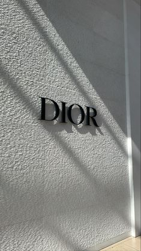

Intro!
The company was founded in 1946 by designer Christian Dior. It currently designs and retails leather goods, fashion accessories, footwear, jewelry, timepieces, fragrance, makeup, and skin care products, while also maintaining its tradition as a creator of haute-couture under the Christian Dior Couture division.
History!
House of Dior was established on 16 December 1946 in “a private house”at 30 Avenue Montaigne Paris B. However, the current Dior corporation celebrates “1947” as the opening year. Dior was financially backed by wealthy businessman Marcel Boussac. Boussac had originally invited Dior to design for Philippe et Gaston, but Dior refused, wishing to make a fresh start under his own name rather than reviving an old brand.
The new couture house became a part of “a vertically integrated textile business” already operated by Boussac. Its capital was at FFr 6 million and workforce at 80 employees. The company was really a vanity project for Boussac and was a “majorly owned affiliate of Boussac Saint-Freres S.A. Nevertheless, Dior was allowed a then-unusual great part in his namesake label (legal leadership, a non-controlling stake in the firm, and one-third of pretax profits) despite Boussac’s reputation as a “control freak”. Dior’s creativity also negotiated him a good salary.
New look!
“Bar” suit, 1947, displayed in Moscow, 2011 On 12 February 1947, Dior launched his first fashion collection for Spring–Summer 1947.The show of “90 models of his first collection on six mannequins” was presented in the salons of the company’s headquarters at 30 Avenue Montaigne. Originally, the two lines were named “Corolle” and “Huit”. However, the new collection went down in fashion history as the “New Look” after the editor-in-chief of Harper’s Bazaar Carmel Snow exclaimed, “It’s such a new look!”
